Калина, Купина
та інша флора вітчизняної криптографії
Руслан Кіянчук
Криптограф & інженер-програміст @ Symantec
Національна стандартизація шифрування
Національні криптографічні алгоритми
Захищають інформацію, що становить
державну таємницю.
Мотивація держав розробляти власні алгоритми
- Недовіра закордонним розробникам.
- Політичні упередження.
- Розвиток науки та заохочення досліджень.
Don't roll your own crypto
| США | DES, Rijndael |
| Канада | CAST5 |
| Китай | SM4 |
| Японія | Camellia |
| Корея | SEED, ARIA |
| Казахстан | NPSS Crypto |
| РФ | Магма (ГОСТ 28147), Кузнєчік |
| Білорусь | BelT |
| Україна | Калина |
Розвиток алгоритмів шифрування в Україні
ГОСТ 28147 (Магма)
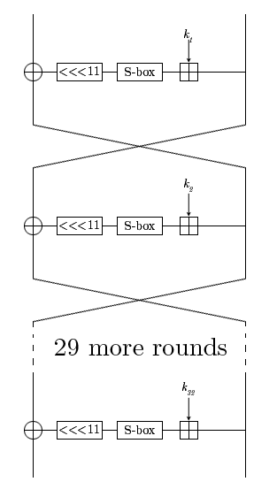- Блок 64 біти (Sweet32)
- Класи слабких ключів.
- Розроблений у 70х роках
у 8-му управлінні КДБ. - Введений в дію у 1989.
(під грифом ДСК) - Розсекречений у 1994.
- Забезпечує захист інформації, що становить державну таємницю України.
Конкурс криптографічних алгоритмів
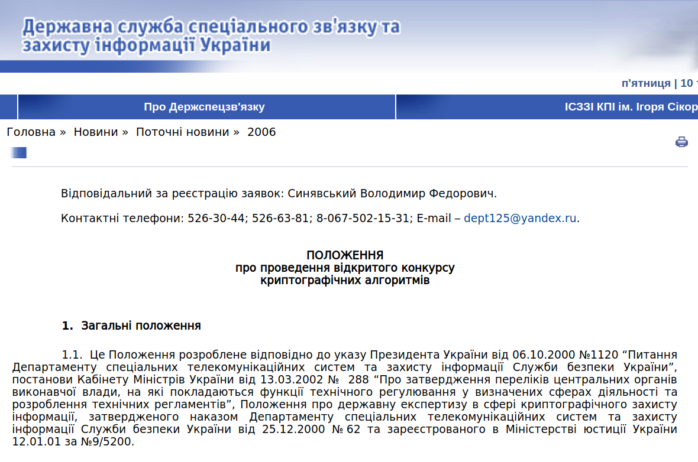 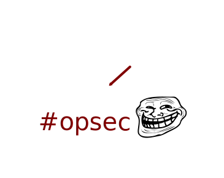Вимоги до криптоалгоритму
- Розміри ключа та блоку даних: 128, 256, 512 біт;
- Стійкість проти відомих методів криптоаналізу;
- Прозорість дизайну та відсутність закладок;
- Швидкодія не менша за ГОСТ 28147.
- Режими роботи: ECB, CBC, CFB, OFB, CTR.
Шифр «Калина»
- Пріоритет — криптографічна стійкість.
- Консервативний підхід.
- Спроектовано на основі SP-мережі Rijndael.
- Оптимізований для x86_64 архітектури.
Геш-функція «Купина»
- Cтруктура Меркла—Дамгора (MD).
- Одностороння функція $T$ — «Калина»
Кандидати
| ADE | ХНУПС ім. Кожедуба, Харків Rijndael SPN, підвищена стійкість до алгебраїчних атак. |
| Лабіринт | АТ «Криптомаш», Харків Компактна реалізація, низька швидкодія. |
| RSB | НАУ, Київ Складна структура, нестандартний мат. апарат. |
| Мухомор | ХНУРЕ, Харків Висока швидкодія. |
| Калина | АТ «ІІТ», Харків Rijndael SPN, високий запас стійкості. |
Національний стандарт шифрування


«Український науково-дослідний і навчальний центр проблем стандартизації, сертифікації та якості»
Режими роботи шифру
| ECB | Проста заміна |
| CBC | Зчеплення шифроблоків |
| CFB | Зворотний зв'язкок за шифротекстом |
| OFB | Зворотний зв'язкок за шифрогамою |
| CTR | Гамування |
| XTS | Індексована заміна |
| CMAC | Вироблення імітовставки |
| CCM | Вироблення імітовставки + гамування |
| GCM, GMAC | Вибіркове гамування з прискореним виробленням імітовставки |
| KW | Захист ключових даних |
Electronic Code Book (ECB)
Проста заміна
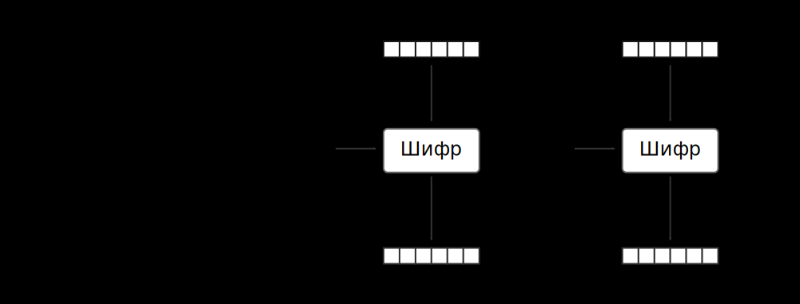- Не потребує IV
- Дозволяє random access.
- Повністю розпаралелюється.
- Розроблений для шифрування носіїв інформації.
ECB пінгвін
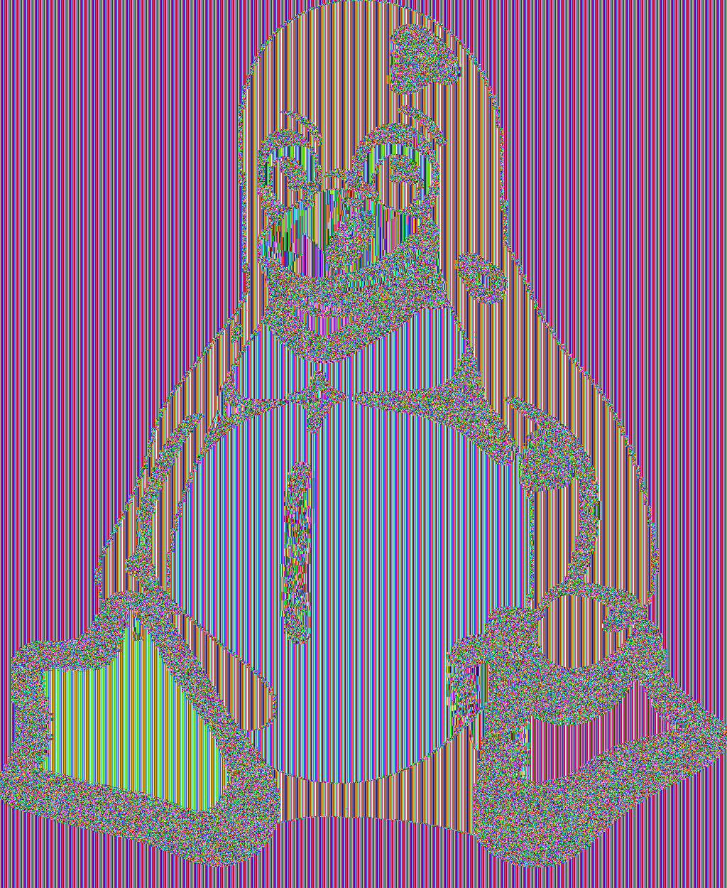ECB гусь
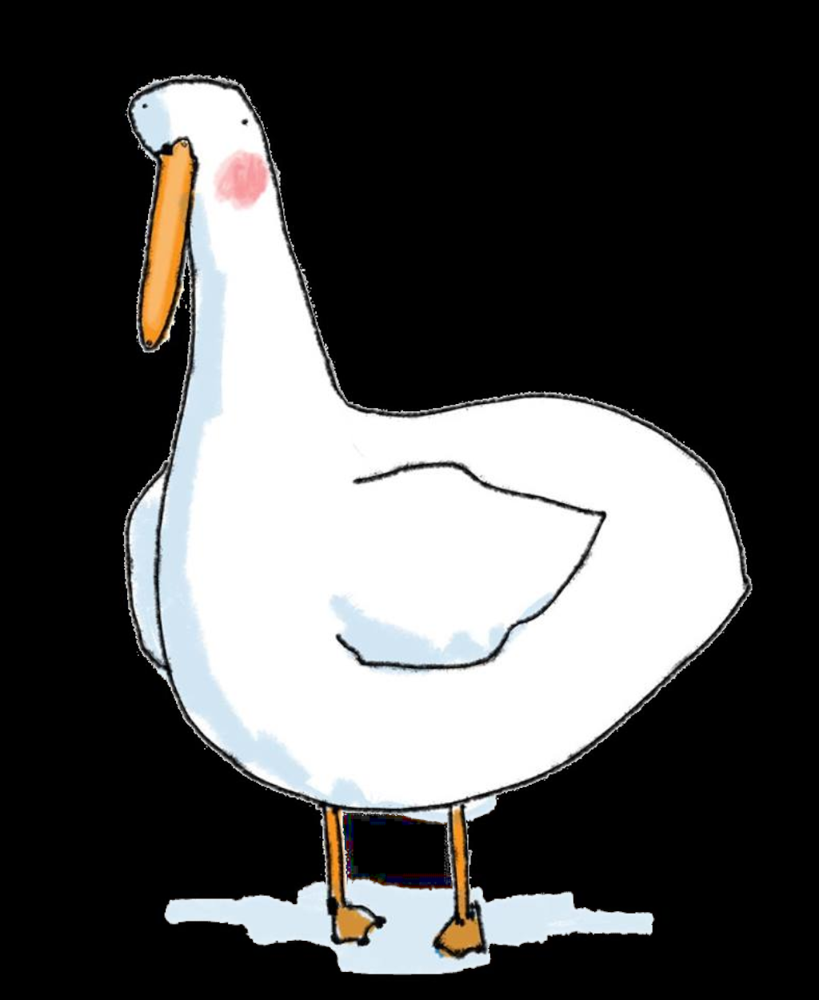 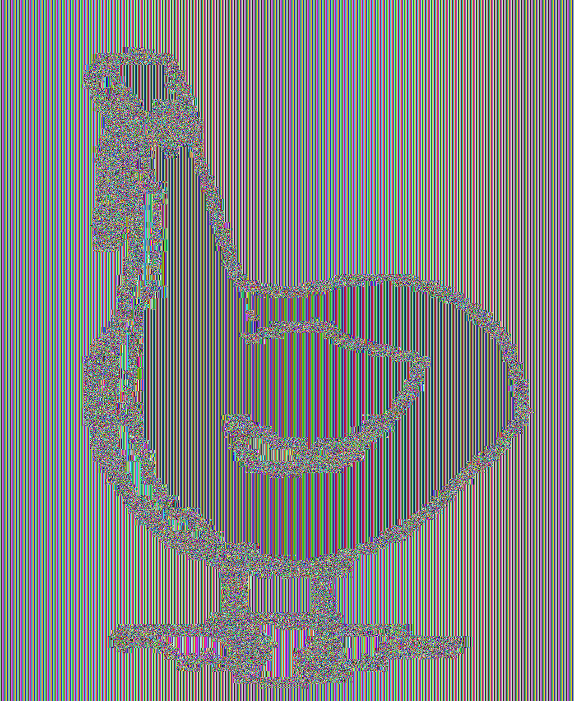Cipher Block Chaining (CBC)
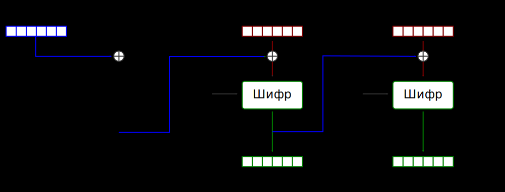- Вимагає доповнення (padding).
- IV: унікальний, випадковий.
- Паралелізація: шифрування так, розшифрування ні.
CBC гусь
Cipher Feedback & Output Feedback (CFB, OFB)
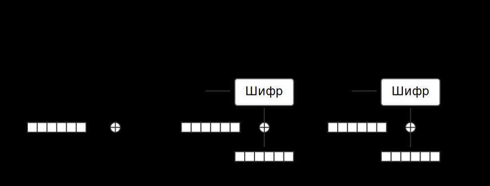- Перетворює шифр у поточний (не потребує доповнення).
- IV має бути унікальним на ключ.
- Шифрування не розпаралелюється, розшифрування - так.
Output Feedback (OFB)
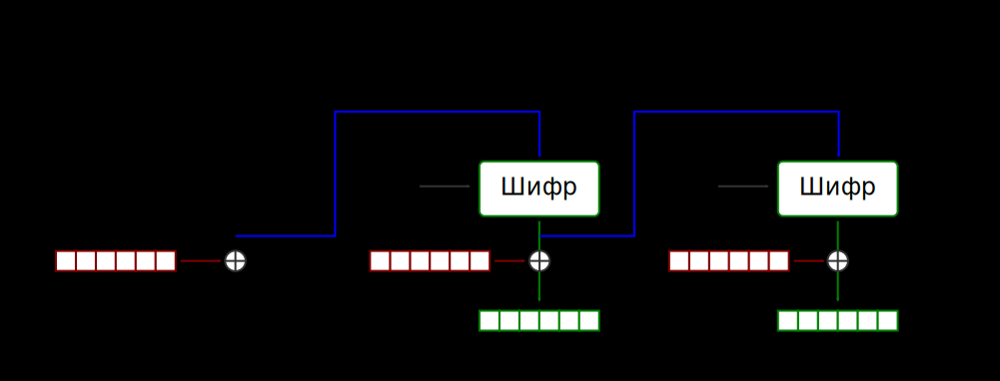- Перетворює шифр у поточний (не потребує доповнення).
- IV має бути унікальним на ключ (nonce).
- Не розпаралелюється.
Counter Mode (CTR)
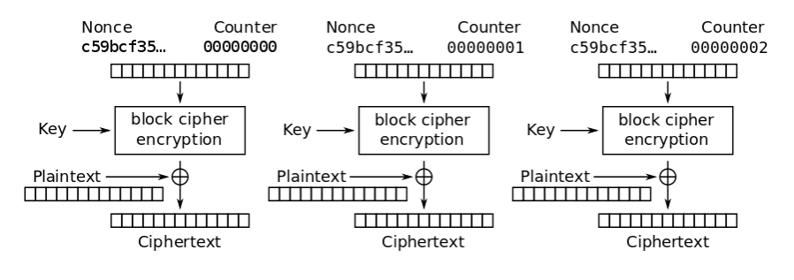- Перетворює шифр у поточний (не потребує доповнення).
- Дозволяє random access.
- Лічильник має бути унікальним на повідомлення та на ключ.
- Повністю розпаралелюється.
Гусь та Nonce reuse
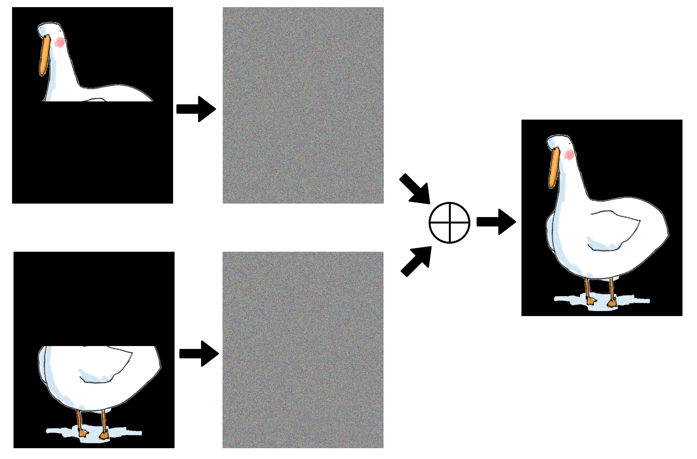XTS
Xor-encrypt-Xor tweaked-codebook with ciphertext stealing 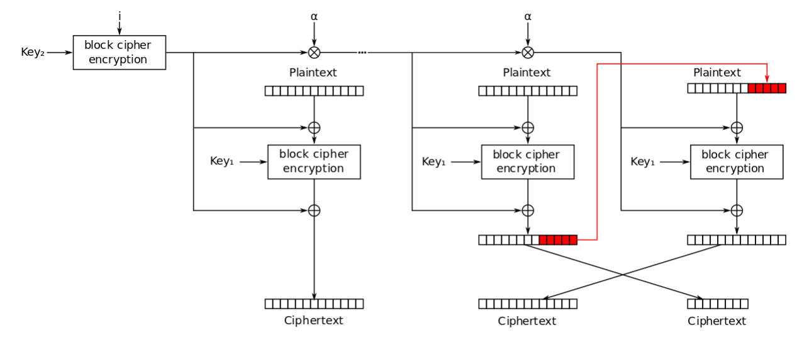- Не потребує IV
- Дозволяє random access.
- Повністю розпаралелюється.
- Розроблений для шифрування носіїв інформації.
CMAC
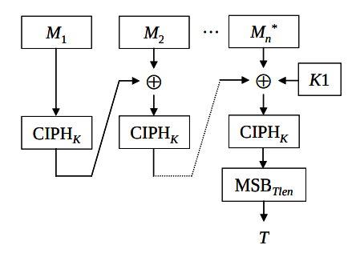- Забезпечує цілісність та автентичність даних.
CCM
GCM, GMAC
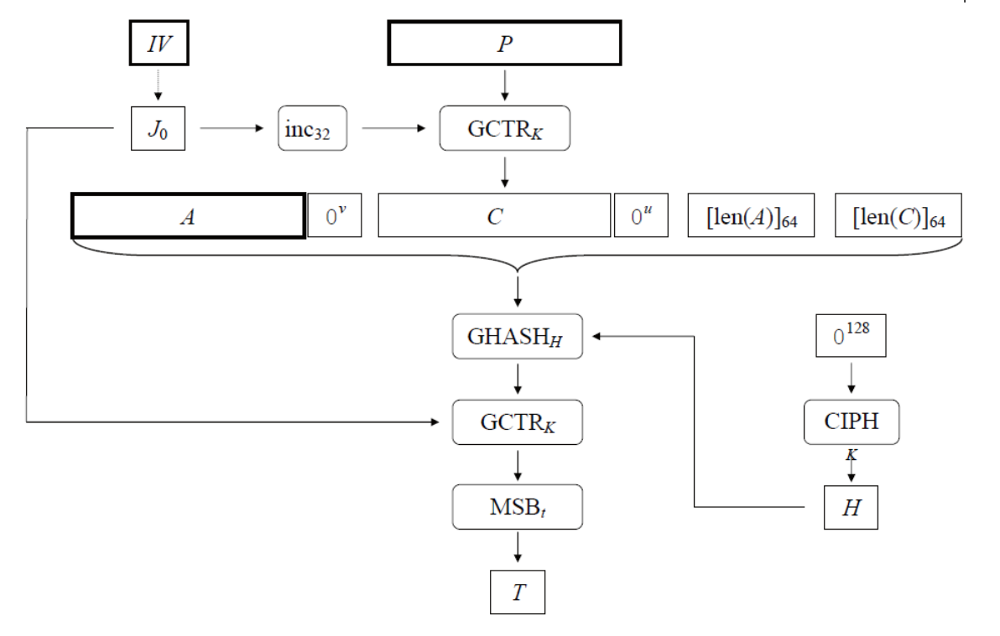- Забезпечує конфіденційність, автентичність , або лише автентичність (GMAC).
- Розпаралелюється.
- Найвища швидкодія.
- IV має бути унікальним на ключ.
- Єдиний ключ для як для автентифікації та шифрування.
Key Wrap (KW)
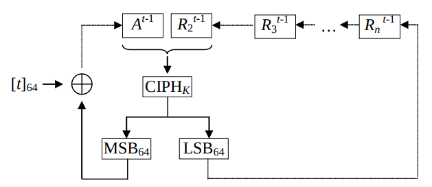
Реалізації
- Прототип
Лише для досліджень! - Cryptonite
Приватбанк. Проведено державну експертизу. - Crypto++
Open source 😬
Ресурси по криптоалгоритмам
- Kalyna Block Cipher
архів Міжнародної Асоціації Криптографічних Досліджень - Функція гешування «Купина»
журнал «Радіотехніка», випуск 181 - «Калина» — основні властивості
Огляд алгоритму у слайдах - «Купина» — основні властивості
Огляд алгоритму у слайдах - ДСТУ :)
Ресурси по криптографії
- Crypto 101
Laurens Van Houtven - Serious Cryptography
Jean-Philippe Aumasson - Cryptography Engineering
Ferguson, Schneier, Kohno - Cryptography Made Simple
Nigel Smart - A Graduate Course in Applied Cryptography
Boneh, Shoup
Q & A
Twitter: @zoresvit
GitHub: @zoresvit
LinkedIn: ruslan.kiyanchuk